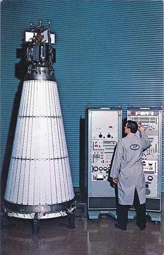
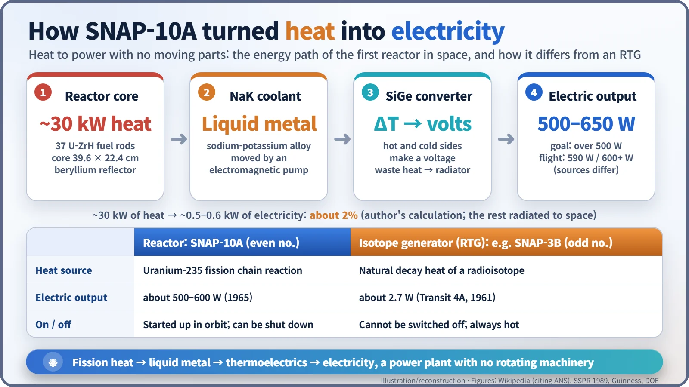
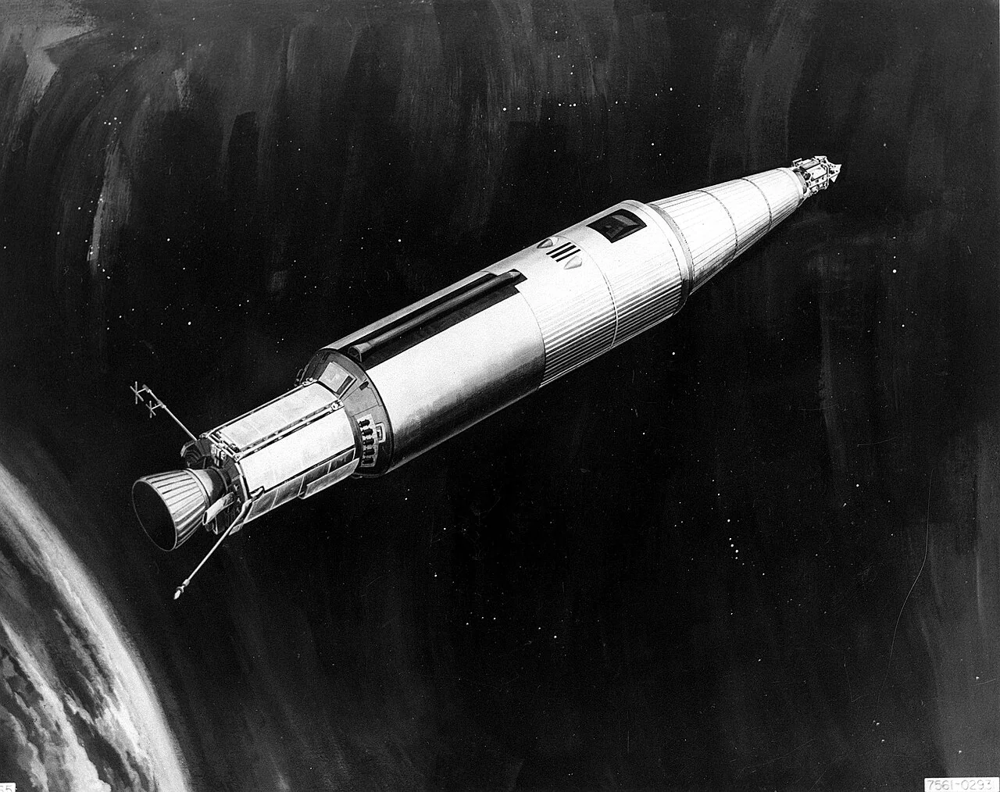
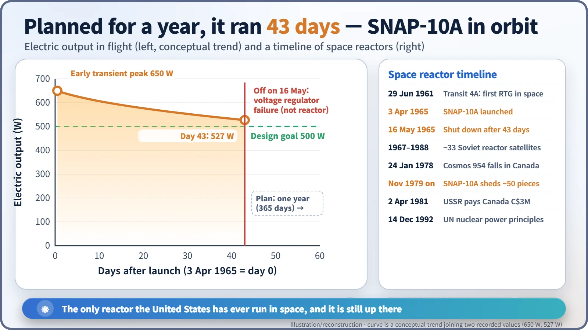

Nuclear History · 173
A Reactor Still Circling 1,300 km Overhead — SNAP-10A, the First Nuclear Reactor in Space (1965)
A watermelon-sized reactor with no moving parts made electricity in orbit for 43 days, and it is still up there.
On 3 April 1965 the United States launched SNAP-10A, the first nuclear reactor ever operated in space. It produced roughly 500 to 650 watts of electricity with no moving parts, ran for 43 days until an unrelated voltage regulator failed, and is still in orbit about 1,300 km up. It remains the only reactor the United States has flown; the Soviet Union launched about 33, one of which, Cosmos 954, fell on Canada in 1978.
A reactor overhead
Right now, as you read this, a nuclear reactor is passing over the poles about 1,300 km above the Earth. It was switched off in the spring of 1965 and has never run again. Its name is SNAP-10A. It was the first nuclear reactor ever operated in space, and it remains the only one the United States has ever flown.

Satellites needed a bigger power socket
In the early 1960s satellites lived on solar cells and batteries. That was fine for small instruments, but bigger equipment would need hundreds of watts. The U.S. Atomic Energy Commission (AEC) set up a programme called SNAP, short for Systems for Nuclear Auxiliary Power. By convention, odd numbers were radioisotope generators, which turn the heat of radioactive decay into electricity, and even numbers were fission reactors.
The first nuclear power source in space was in fact an odd-numbered one: the SNAP-3B radioisotope generator on the Navy's Transit 4A navigation satellite in 1961, which produced 2.7 watts. [5] Anything much bigger called for a reactor.
A watermelon-sized core and no moving parts
SNAP-10A was built by Atomics International in California. Its core was just 39.6 cm long and 22.4 cm across, about the size of a watermelon, and held 37 fuel rods of uranium mixed with zirconium hydride. The hydrogen in the fuel doubled as the moderator, slowing neutrons down so that they would keep the chain reaction going. [9]

There was no turbine and no impeller. About 30 kW of heat from the core was carried away by NaK, a liquid alloy of sodium and potassium, pushed along by an electromagnetic pump that uses only current and magnetism. The hot metal then flowed past silicon-germanium thermoelectric elements, semiconductors that generate a voltage when one side is hot and the other cold. The leftover heat was radiated into space from the cone-shaped body. That makes for a low efficiency: roughly 0.5 kW of electricity from 30 kW of heat, or about 2% (author's calculation). The pay-off was that there was no rotating machinery to wear out in orbit.
3 April 1965: forty-three days of power
On 3 April 1965 an Atlas-Agena rocket lifted off from Vandenberg Air Force Base in California carrying a satellite called Snapshot. [1] The reactor was started only after it reached orbit.

The power figures differ from source to source. The design goal was more than 500 watts for one year. One account gives a peak of 590 W; Guinness World Records says the reactor began producing "more than 600 W some 12 hours after launch"; [2] and a 1989 technical review describes "a transient high of 650 We in the early part of the mission to a low of 527 We in the Sun after 43 days". [3] Whichever number you take, the target was met.
Then, on 16 May 1965, after 43 days, the reactor shut down. The cause was not the reactor. A voltage regulator on the satellite failed and sent a spurious command that shut it down. The 1989 review adds that there was "no evidence of any malfunction in the SNAP-10A system". The flight had a second experiment on board, an ion engine that used caesium as propellant; high-voltage breakdowns in it caused electrical interference that disturbed the satellite's attitude, and it was switched off for good after less than an hour.
On the ground, a twin reactor kept running for 10,000 hours, more than a year, showing that the full mission had been within reach. [4]

The story did not end when it switched off
At 1,300 km there is almost no air to drag a satellite down, so SNAP-10A will stay up for a very long time: about 1,000 to 4,000 years, depending on the estimate. From November 1979 it began shedding pieces, about 50 of them large enough to track. The cause is unknown; a collision with a small object has been suggested. [9]
The Soviet Union made far greater use of space reactors. Between 1967 and 1988 it launched about 33 of them on ocean-surveillance satellites. One, Cosmos 954, lost its orbit and came down over Canada's Northwest Territories on 24 January 1978. Radioactive debris was scattered across a region of about 124,000 square kilometres, and Canada and the United States searched it in Operation Morning Light until October that year. [6] No injuries were reported, but only a tiny fraction of the fuel was ever recovered. Canada's claim of about C$6 million was settled by a protocol of 2 April 1981 under which the Soviet Union paid C$3 million. [7] The accident is widely cited as one of the triggers for the Principles Relevant to the Use of Nuclear Power Sources in Outer Space, adopted by the UN General Assembly in December 1992. [8]
NERVA, the American project to use a reactor to drive a rocket, never got beyond ground tests. So the U.S. record for reactors in space still consists of a single entry: 43 days in 1965.